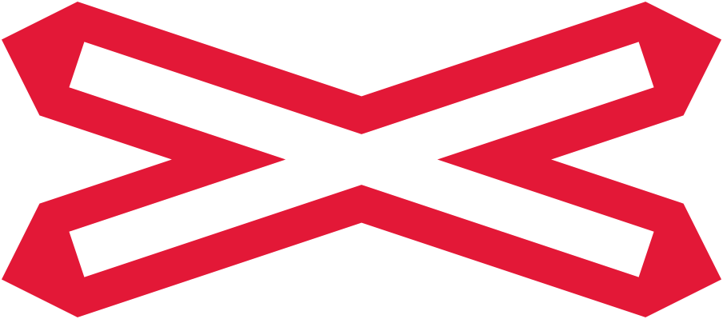

Loading...

Level crossing without gate or barrier
⚠ Warning Signs
📖 Description
This St Andrew’s Cross sign is placed directly at the railway tracks and indicates a level crossing without gates or barriers. Drivers must stop if a train is approaching and proceed only when the tracks are completely clear.